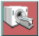
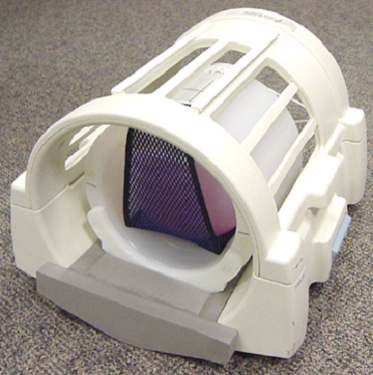
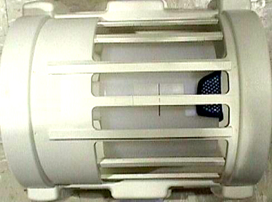
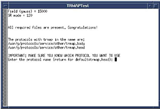

Proprietary to General Electric Company
Direction 5440000, Rev# 5
Signa HDxt Service Methods
Module Version 2.0, Version Date 10/15/08
Proprietary to General Electric Company |
| Required Persons | Preliminary Reqs | Procedure | Finalization |
|---|---|---|---|
| 1 | Not Applicable | 30 mins | Not Applicable |
| Item | Qty | Effectivity | Part# | Manufacturer | |
|---|---|---|---|---|---|
| Positioner, Head Loader | 1 | - | 5110241 | - | |
| ||||
| POISON HAZARD! | ||||
| 0.7T, 1.0T and 1.5T PHANTOMs CONTAIN NICKEL CHLORIDE, A SUSPECTED CARCINOGEN. | ||||
| DO NOT INGEST. DISPOSE OF AS A HAZARDOUS WASTE ACCORDING TO STATE AND FEDERAL REGULATIONS. |
| ||||
| POISON HAZARD! | ||||
| 3.0T Phantoms CONTAIN Silicon Oils. | ||||
| DO NOT INGEST. DISPOSE OF AS A HAZARDOUS WASTE ACCORDING TO STATE AND FEDERAL REGULATIONS. |
Click the 
If necessary, click , then click to cancel any previous exam.
| NOTE: | Test functionality and system functionality may be adversely affected if the previous exam is not terminated. |
Install the head coil on the patient table.
(For Split Top Head Coil only) Place the head loader foam positioner (p/n 5110241) into the head coil. See Illustration 1.
Place the Head TLT Sphere in Head Loader and insert into the head coil.
Illustration 1: HEAD TLT PHANTOM SETUP, SPLIT TOP COILS

Landmark. See Step for Quad Head Coil landmark location. See Illustration 2 for Split Top Head Coil landmark location. For systems with a split-top head coil as shown in Illustration 1, place the TLT sphere, loader shell and foam positioner into the Split top head coil. Align the laser cross hairs with the Loader shell cross marks.
Illustration 2: LANDMARKING THE SPLIT TOP HEAD COIL

From the Common Service Desktop, select [Image Quality], [TRMAP Test] and then launch the tool by clicking on [Click here to start this tool].
The TRMAP Test window opens. See Illustration 3.
Illustration 3: TRMAP WINDOW

Place the mouse cursor inside the window and then <Return> to select [trmap.head] as the default protocol.
Many lines of information will begin scrolling across the screen. The system will scan and when the test is done (takes about 5 minutes to complete) the data will automatically be analyzed and the window will then disappear. Please be patient during the analysis. No entry is required from the user during the data analysis.
After GNUPLOT and results are displayed, push <Enter> twice in TRMAP window to exit.
Proceed to TRMAP RESULTS.
No finalization steps.